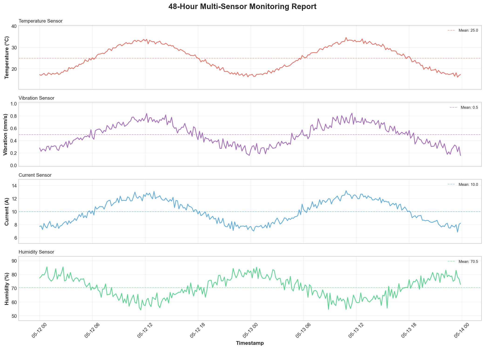
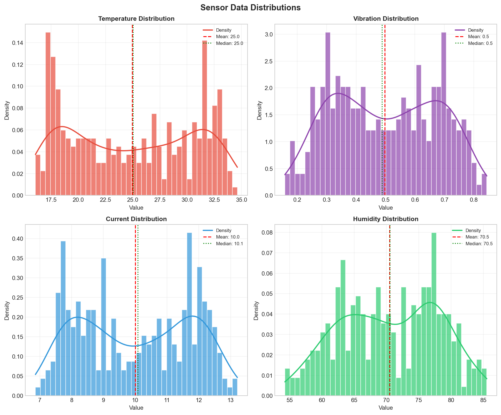
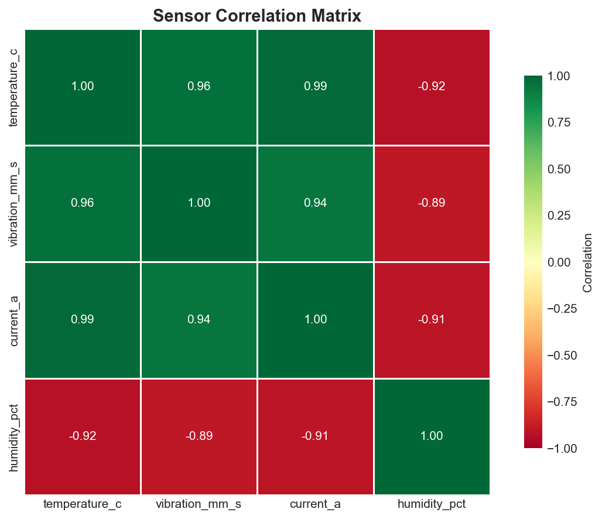

Report Generated: 2026-05-19 17:09:27
Data Period: 48 hours | Readings: 288 (every 10 minutes)



| temperature_c | vibration_mm_s | current_a | humidity_pct | |
|---|---|---|---|---|
| count | 288.00 | 288.00 | 288.00 | 288.00 |
| mean | 24.97 | 0.50 | 10.00 | 70.49 |
| std | 5.71 | 0.18 | 1.74 | 7.66 |
| min | 16.05 | 0.16 | 6.86 | 54.26 |
| 25% | 19.27 | 0.34 | 8.37 | 64.15 |
| 50% | 25.04 | 0.49 | 10.08 | 70.53 |
| 75% | 30.75 | 0.66 | 11.68 | 77.10 |
| max | 34.63 | 0.84 | 13.21 | 85.54 |
Report generated by SEED AI & ML for Electrical Engineers - Multi-Sensor Monitoring System